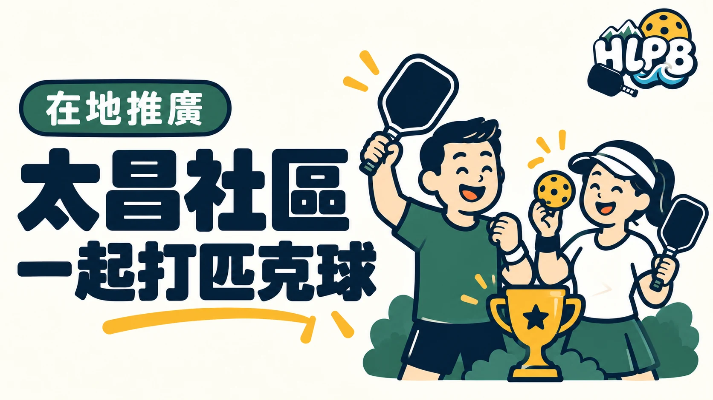

對第一次接觸匹克球的人來說，最難的往往不是把球打過網，而是不知道去哪裡開始、沒有人陪打，也擔心自己程度不夠。
太昌社區發展協會在花蓮縣吉安鄉推廣匹克球，從體驗活動、社區比賽到臨打安排，讓不同程度的球友有機會一起上場。這些安排，也讓「想試試看」更容易變成真正拿起球拍的第一步。
從太昌國小開始，讓社區一起參與
依活動貼文與提供的紀錄，協會結合太昌國小場地舉辦匹克球體驗，並與原點匹克球合作推動「原點第一拍」活動。參加者可以接觸器材、練習基本擊球，再透過簡單對打認識這項運動。
學校場地仍須依校方或租借團體安排使用，不能因為曾辦過活動，就直接認定平時可以自由進入。
不只體驗，也有比賽與球拍試打
太昌社區舉辦的歡樂盃 MiLP 賽，讓花蓮市、吉安鄉及其他社區的球友有機會交流。活動也結合球拍試打，讓參加者實際比較不同器材的握感與擊球感受。
對新手來說，有人帶著認識規則、有友善的場次可以加入，比單純知道一個場地地址更有幫助。協會總幹事與團隊持續協調場地、活動及參與者，這些幕後工作也是社區推廣能持續的重要原因。
讓第一場體驗，有機會接上下一次打球
體驗、試打、臨打與社區比賽，可以成為一條連續的參與路徑。第一次來的人先認識匹克球，喜歡之後再找適合的場次，慢慢建立自己的打球習慣。
HLPB 希望把這些在地資訊整理清楚，讓花蓮球友更容易找到入口。實際場次、報名資格及參加方式，仍以協會當次公告為準。
資料來源與參與入口
本文依活動單位提供的活動貼文紀錄整理；紀錄包含「原點第一拍」太昌體驗、太昌歡樂盃 MiLP 與球拍試打，未提供日期的活動不另推定舉辦時間。
資料來源：活動單位提供的太昌體驗、歡樂盃 MiLP 與太昌國小活動貼文紀錄；原點匹克球 Facebook
返回文章列表